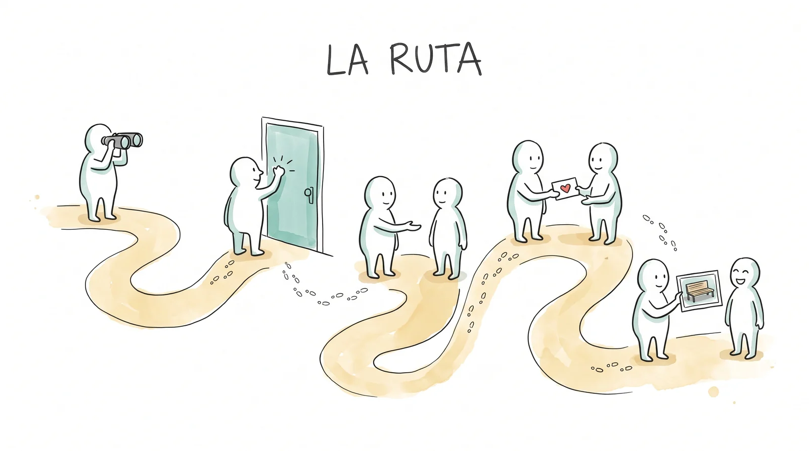
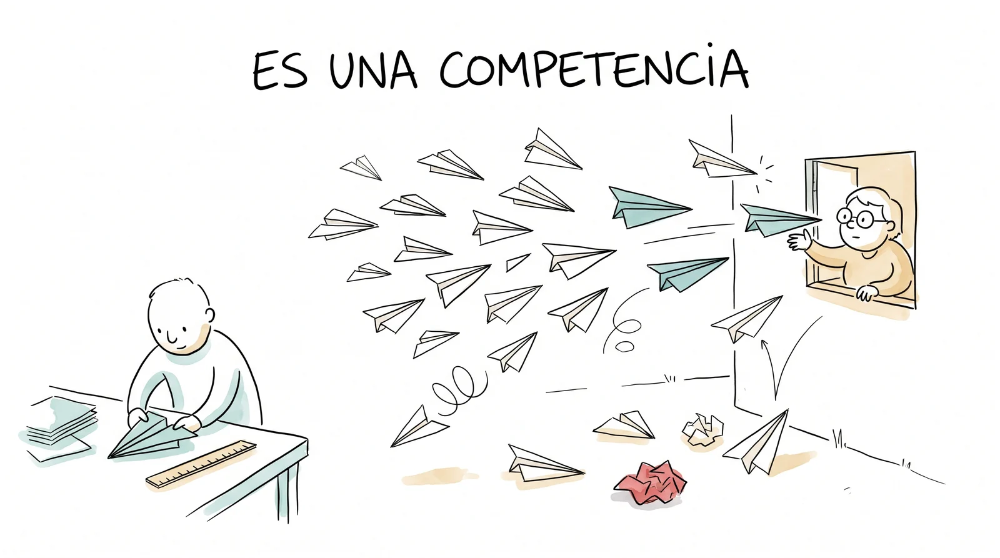
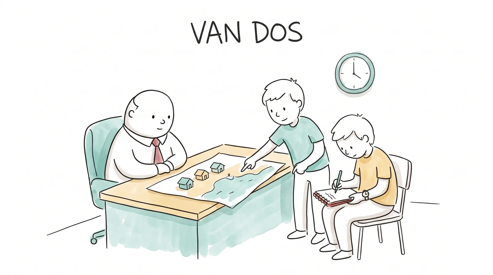

El mazo de la primera parte: cómo se consigue lo que al proyecto le falta. Se proyecta con Presentar; la tecla N muestra las notas del conductor, que traen la fuente de cada dato. Las direcciones y las reglas se revisaron el 18 de noviembre de 2026.
Gestionar recursos
Que cada equipo salga con su mapa de gestión: qué falta, a quién se le pide, qué exactamente, quién va, cuándo, y el primer mensaje ya escrito.
Salir a conseguir
Gestionar no es pedir un favor: es proponer un trato.

El presupuesto de la presa ya dice lo que falta. ¿A quién se lo van a pedir primero, y qué le van a decir?
Casi todos contestan "al municipio" o "al gobierno", y "que nos apoye". Con eso todavía no hay gestión, porque "el municipio" no contesta el teléfono y "apoyo" no se puede entregar. La gestión empieza cuando la respuesta se vuelve una persona con cargo, una cosa con cantidad y una fecha: "a la dirección de Obras Públicas, dos viajes de grava, en marzo".
Anotar tres respuestas tal como salgan. Al final de la práctica se vuelve a ellas y se reescriben con cargo, cantidad y fecha.
Qué es gestionar y para qué sirve
Gestionar es conseguir que otros pongan lo que al proyecto le falta, porque a ellos también les conviene.
En México "gestionar recursos" quiere decir salir a conseguirlos: dinero, pero también materiales, maquinaria, manos, permisos y firmas. Sirve para que el proyecto exista: el presupuesto de la presa es más grande que cualquier bolsillo de los que hay, así que alguien tiene que ir a tocar puertas. Lo que distingue a un gestor de alguien que pide es la segunda mitad de la frase: llega sabiendo qué gana el otro.

El objetivo común: el puente se arma desde las dos orillas.
El trato: lo que queremos, lo que quieren y lo que nos junta
Antes de pedirle algo a alguien se llena su círculo: ¿qué le importa a esa oficina, a ese negocio, a esa fundación este año? Si no se sabe, la primera visita es para preguntarlo. Lo que se pide sale del cruce de los dos círculos.
Es el esquema de la presentación original del curso (lo que quieres, lo que ellos quieren, objetivo común). El ejemplo es el del Ayuntamiento; pedir al grupo el círculo de la ferretería y el de una fundación.
No solo dinero: de cinco cosas que llegan a la obra, una es una moneda.
Recurso no quiere decir dinero
De las cinco formas en que llega una cosa al proyecto, cuatro se consiguen conversando.
Ya las conocen del presupuesto: comprado, en faena, prestado, trocado o donado. Solo lo comprado necesita dinero. La máquina del Ayuntamiento es un préstamo, la palma del ejido es una donación, los jornales son faena. Por eso el gestor piensa primero en quién tiene la cosa, y deja para el final la pregunta de quién tiene el dinero para comprarla. Casi siempre es más fácil que alguien dé lo que ya tiene.
La gente le da a la gente
49 de cada 100 pesos
De cada cien pesos que se donan en México, cuarenta y nueve van directo de una persona a otra persona o familia, sin pasar por ninguna organización. La gente da cuando conoce a quien pide y cuando ve a dónde va lo suyo. Para un grupo sin oficina y sin logotipo es buena noticia: aquí ustedes pueden dar la cara, y una institución grande no puede.
Fuente: World Giving Report 2025 (Charities Aid Foundation con Cemefi), capítulo México; ese año donó el 52% de las personas adultas. La misma idea está en la guía de movilización de recursos locales de GNDR y Change the Game Academy: las personas dan a otras personas, no a las organizaciones.
El mapa de gestión: cada posible aliado se coloca según cuánto puede poner y qué tan cerca está.
Qué es el mapa y para qué sirve
Es un cuadro donde se acomoda a quién pedirle, para decidir por dónde empezar.
A cada posible aliado se le hacen tres preguntas: ¿puede? (tiene la cosa, o el dinero), ¿le importa? (el proyecto toca algo que le interesa) y ¿tenemos cómo llegar? (alguien del equipo o del ejido lo conoce). Con tres síes va en "Primero". Si puede y no nos conoce, primero hay que acercarse: una visita para preguntar, sin pedir todavía. Sirve para no gastar el mes escribiéndole a la fundación más famosa mientras la máquina que hacía falta estaba a dos cuadras.
Las tres preguntas son de Kim Klein, que lleva cuarenta años enseñando a organizaciones de base a juntar fondos: capacidad de dar, interés en la causa y contacto. Falta de contacto es lo que más se puede arreglar, y se arregla con visitas.

Dos caminos: por convocatoria, que se escribe, y la gestión directa, que se conversa.
Dos caminos para conseguir
| Por convocatoria | Gestión directa | |
|---|---|---|
| Qué es | Un fondo publica sus reglas y una fecha; muchos piden y un comité escoge. | Vas con una persona que puede decidir y le propones un trato. |
| Habilidad | Escribir: claro, completo y en su formato. | Conversar: escuchar, pedir y dar seguimiento. |
| Quién pone la fecha | Ellos. La ventanilla abre y cierra. | Tú. Se toca la puerta cuando hace falta. |
| En la presa | El PROCODES, la planta de CONAFOR. | El ejido, el Ayuntamiento, los negocios, la UAQ. |
Un proyecto de verdad usa los dos caminos, y casi siempre empieza por el segundo: la convocatoria pide carta del ejido y visto bueno del municipio, y esos papeles se consiguen conversando.

La ruta de una gestión: averiguar, acercarse, pedir, agradecer y contar qué pasó.
La ruta de una gestión
- Averiguar. Qué le importa este año a esa oficina, a ese negocio, a ese fondo, y quién decide ahí.
- Acercarse. Un mensaje corto para pedir quince minutos. Todavía no se pide la cosa.
- Pedir. En persona: una cosa, con cantidad y fecha. Es el pitch de la segunda parte.
- Agradecer. El mismo día, por escrito, digan que sí o que no.
- Contar qué pasó. Una foto de la obra con lo que pusieron. Así se abre la puerta para la siguiente vez.
Casi todos se saltan del paso uno al tres y se olvidan del cuatro y el cinco. Los dos últimos son los más baratos y los que más rinden: conservar a quien ya dio cuesta mucho menos que encontrar a alguien nuevo.

La convocatoria es una competencia: la ventana es chica y los aviones son muchos.
1 Por convocatoria: es una competencia
1 de 3 no era para ese fondo
Una fundación que apoya proyectos de biodiversidad contó sus rechazos: casi un tercio de las solicitudes que recibe pide algo que el fondo no apoya. Son semanas de trabajo que se pierden por no leer las reglas. Las solicitudes que sí caben, traen objetivos concretos y contestan lo que se pregunta tienen entre una de tres y una de dos posibilidades de ganar. La mayor parte de la competencia se gana antes de escribir.
Fuente: JRS Biodiversity Foundation, "Why we decline". Sus otros motivos de rechazo: objetivos demasiado amplios, equipo sin experiencia en el tema, plan y presupuesto débiles, y no contestar lo que se pregunta. La presentación original lo decía con una frase de Ken Hakuta: la falta de dinero no es obstáculo; la falta de una buena idea, sí.
Antes de escribir, cuatro preguntas
| La pregunta | En el PROCODES 2026 |
|---|---|
| ¿A quién le dan? | A grupos de al menos cinco personas de la localidad, ejidos y comunidades. A estudiantes, universidades y municipios, no. |
| ¿Qué pagan? | Los conceptos de su lista, con tope. Lo que no está en la lista no se paga. |
| ¿Qué les importa? | La conservación dentro de la Reserva. Dan puntos extra a jóvenes de 18 a 29 años y a mujeres. |
| ¿Qué piden que pongas? | El 20% en proyectos productivos, que puede ser en jornales y materiales. |
Estas cuatro preguntas se le hacen a cualquier fondo antes de escribirle. Si una sale mal, no se escribe: se busca otro fondo, o se busca al aliado que sí puede pedir. En la presa, quien pide es un grupo de La Florida, y el equipo acompaña.
Para decidirlo en quince minutos está el semáforo de convocatorias, y el detalle del programa en la guía del PROCODES. Reglas de operación 2026: DOF del 15 de enero de 2026.
El reloj de la convocatoria
Quince días hábiles.
Eso dura abierta la ventanilla del PROCODES una vez que sale la convocatoria, que se publica a más tardar el último día hábil de febrero. En quince días no se consigue un acta de asamblea, ni tres cotizaciones, ni la carta del municipio: cada papel tarda más que la ventanilla entera. Quien gana ya tenía todo eso en diciembre y en febrero solo llena el formato. Por eso la gestión directa va primero.
Cómo te van a calificar
En ese orden. La mejor idea del mundo no llega al tercer paso si le faltó una firma en el primero. Cada fondo publica su tabla de puntos: se escribe con la tabla enfrente, contestando criterio por criterio.
En el PROCODES son doce criterios y 52 puntos, con mínimo de 20 para pasar; lo que no se corrige en cinco días hábiles se desecha. La presentación original traía un formato real de evaluación de la Fundación Gonzalo Río Arronte: si se tiene a la mano, se enseña aquí.
Seis costumbres de quien gana
| La costumbre | Por qué |
|---|---|
| Lee una propuesta que ganó | Enseña el tamaño, el tono y el nivel de detalle que ese fondo espera. |
| Sigue las instrucciones al pie | Si piden dos cuartillas, son dos. Quien no sigue la instrucción avisa cómo va a manejar el dinero. |
| Cuida la ortografía y las sumas | Un presupuesto que no suma tira la confianza en todo lo demás. |
| Se la da a leer a alguien que no la conoce | Lo que esa persona no entienda, el evaluador tampoco. |
| Dice qué pasa cuando se acaba el dinero | Quién lo mantiene y con qué. Es la pregunta que todo fondo se hace. |
| Habla de lo que al fondo le importa | Con las palabras de su convocatoria, no con las del equipo. |
Son los puntos 3 a 7 de la presentación original. Se quitó la lista de "palabras poderosas" (fortalecer, empoderar, promover): hoy las trae cualquier solicitud y ya no distinguen a nadie; el Mazo 2 explica con qué se cambian.
Primero una hoja, después la propuesta
Cada vez más fondos piden primero una idea corta, y solo invitan a algunos a escribir la propuesta completa.
El Programa de Pequeñas Donaciones del PNUD pide un perfil con un video de treinta segundos antes de la propuesta en extenso. La embajada de Australia pide una expresión de interés. Es una buena costumbre aunque no la pidan: mandar una hoja y preguntar "¿esto cabe en su convocatoria?" ahorra semanas a los dos. Esa hoja es el pitch por escrito: qué pasa, qué harán, qué cambia, qué está puesto y qué piden.
Convocatoria 2026 del PPD México (fase 8) y programa de ayuda directa de la embajada de Australia, ronda 2026 a 2027. Ninguno de los dos aplica hoy a la presa (el PPD trabaja en el sur-sureste y Baja California Sur, y los dos piden figura legal): se citan por la forma.
Dónde buscar hoy
| Dónde | Qué hay |
|---|---|
| El Diario Oficial, en enero y febrero | Las reglas de operación de los programas federales: PROCODES, CONAFOR. Ahí está todo lo que el programa paga y pide. |
| gestionandote.org | Convocatorias en español, al día, para organizaciones y grupos de México. |
| terravivagrants.org | Fondos internacionales para agricultura, agua y medio ambiente. Los perfiles de los donantes son gratis. |
| La presidencia municipal | El programa de obra del año se arma con lo que piden las localidades. Se pregunta en persona cuándo y con quién. |
| Lo que ya no existe | El Indesol y su coinversión social, el programa 3x1 para migrantes, corresponsabilidad.gob.mx y el directorio de recursosinternacionales.org. |
Las listas de fondos envejecen rápido: de las nueve direcciones que traía este curso hace unos años, tres ya no abren y tres cambiaron. Lo que no envejece es la costumbre de revisar una vez al mes.
Revisado el 18 de noviembre de 2026. Candid (antes Foundation Center) sirve sobre todo para fundaciones de Estados Unidos; Cemefi sigue vivo pero ya no publica el listado de convocatorias en la dirección de antes; la página de convocatorias de AMEXCID ya solo trae becas. Muchas fundaciones grandes (Río Arronte, ADO) piden que quien solicita sea donataria autorizada: ahí se entra de la mano de una asociación civil aliada.
2 Gestión directa: el primer mensaje
| Parte | Qué lleva |
|---|---|
| El asunto | De qué se trata, en seis palabras. "Cita" no dice nada; "Cita: palapas en la presa de La Florida" sí. |
| Quién soy | Nombre, de dónde y con quién vengo: "con el ejido de La Florida". |
| Por qué a usted | Una línea que demuestre que hiciste la tarea sobre su oficina o su negocio. |
| Qué pido | Quince minutos. Solo eso. La cosa se pide en persona. |
| Cuándo | Dos opciones de día y hora, y un teléfono. |
Sirve igual para el correo, para el WhatsApp y para el oficio; cambia el largo. El objetivo del mensaje es que te reciban.
El mismo mensaje, dos veces
En el primero hay tres problemas: el asunto no dice nada, hay dos faltas de ortografía en un renglón, y "espero su respuesta" suena a orden. En el segundo, quien lo lee ya sabe quiénes son, por qué le escriben a ella y qué tiene que contestar. El correo con apodo se cambia por uno con nombre y apellido.
Los dos salen de los correos comentados de la presentación original, con cargos en lugar de nombres. En Arroyo Seco el primer mensaje suele ser un WhatsApp y después el oficio en papel con sello de recibido; la práctica arma los tres.

Van dos: una persona habla y enseña el plano, la otra apunta y cuida el reloj.
La visita
Llegar en montón intimida y estorba. Dos personas bastan: la que da la cara mantiene la plática, y la que apunta se lleva escrito lo que se prometió, con las palabras exactas. Lo que no se apuntó, no se dijo.
Cuando la puerta no se abre
| Lo que pasa | Lo que se hace |
|---|---|
| Te reciben con desgano | Una pregunta sobre su trabajo cambia la plática: "¿qué es lo que más le piden de esa zona?". |
| Te dan la información a medias | Se pregunta quién más sabe del tema y se pide permiso de decir que vienes de su parte. |
| Posponen la cita una y otra vez | A la tercera, se deja el oficio con sello de recibido y se busca otra entrada: el regidor, el delegado, el comisariado. |
| "Están muy jóvenes, no tienen experiencia" | No se discute: se enseña lo hecho. El permiso del ejido, las cotizaciones, el plano. |
Un "no" casi nunca es para siempre: es "no así", "no ahorita" o "no conmigo". Antes de irse se pregunta cuál de los tres es.
Lo que no se aguanta
Ninguna gestión vale un trato humillante ni un acoso.
A veces quien recibe coquetea, hace comentarios sobre el cuerpo o condiciona el apoyo. Eso no es una dificultad de la gestión ni se resuelve con técnica. Se hace esto: se va siempre de dos, se termina la reunión en ese momento ("gracias, le dejamos el oficio"), se cuenta ese mismo día al profesor o a la coordinación, y se busca otra puerta. El proyecto no depende de una sola persona, y nadie del equipo tiene que volver a esa oficina.
La presentación original lo listaba entre los obstáculos de la entrevista. Decirlo en voz alta y sin rodeos: cuando pasa, la reacción más común es creer que hay que aguantar por el bien del proyecto.

Dar las gracias: la foto de lo que se hizo con lo que pusieron.
Después del sí, y después del no
El dato del rechazo es del Center for Effective Philanthropy (encuesta a organizaciones solicitantes): cerca de la mitad de los rechazados no recibió ninguna explicación. La guía de GNDR le llama "recaudación de amigos": se comparten con quien dio los éxitos y también los problemas.
Un proyecto en pedidos
Nadie paga la presa entera. Mucha gente puede pagar un pedazo.
El presupuesto completo asusta; un pedido del tamaño de quien lo recibe se puede contestar. La orilla se parte en pedidos: la grava al Ayuntamiento, la planta a CONAFOR, las palapas al PROCODES, el cemento a la ferretería, las manos al ejido. Depender de un solo bolsillo es el mayor riesgo de un proyecto: si ese falla, se cae todo. Con cinco pedidos chicos, si uno falla, se cae un pedazo.
Así se ve uno hecho: la gestión de las palapas
| Lo que falta | A quién | Qué exactamente | Quién va y cuándo | Plan B |
|---|---|---|---|---|
| Permiso y manos | Asamblea del ejido | Acuerdo en acta y dos faenas en febrero | Quien da la cara · asamblea de enero | Faenas con la escuela |
| Piso parejo | Dirección de Obras Públicas | Dos viajes de grava y un día de máquina en marzo | Dos del equipo · segunda semana de enero | Un viaje; se empareja a mano |
| Madera y herrería | PROCODES, con un grupo de La Florida | $38,000: el 80% de lo que se compra | El grupo, con el equipo · febrero | Dos palapas en lugar de tres |
| Cemento | Ferretería del pueblo | Doce bultos en febrero, con placa | Quien lleva los números · enero | Seis bultos y cooperación |
Cada renglón se puede leer en voz alta como un encargo: a quién, qué, quién va y cuándo. Y cada uno trae su plan B, porque alguno va a salir que no. Los números son de ejemplo; está cargado completo en la práctica.
El mapa de gestión de su componente, y el primer mensaje ya escrito.
Abran la práctica de gestión con el presupuesto de su componente enfrente. Uno: escriban lo que falta, renglón por renglón. Dos: a cada renglón pónganle a quién, qué exactamente, quién va, cuándo y el plan B; la hoja dibuja el mapa y revisa lo que quedó vago. Tres: escojan el renglón de "Primero" y armen el mensaje para pedir la cita, en WhatsApp, correo u oficio.
Abrir la práctica ▸ El acordeón de la claseCuarenta minutos. Rondar con una sola pregunta: "¿quién es, con cargo?". Al cierre, cada equipo lee en voz alta su renglón de "Primero" y se reescriben las tres respuestas del inicio.